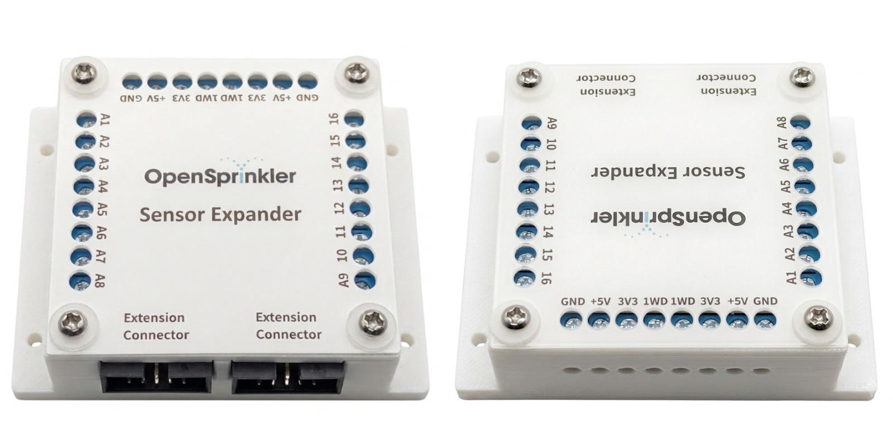
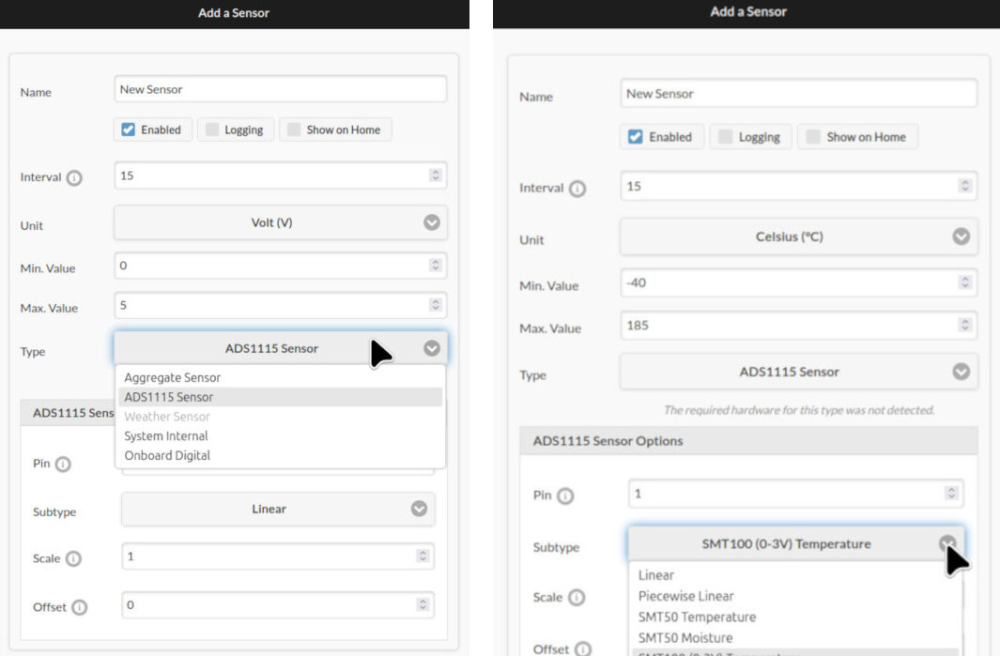
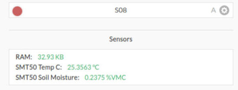
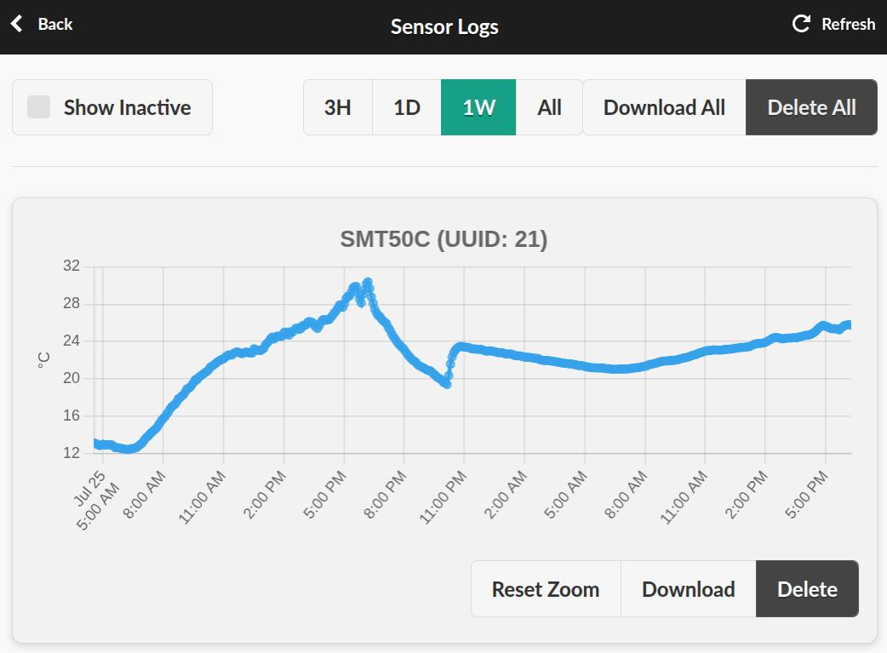
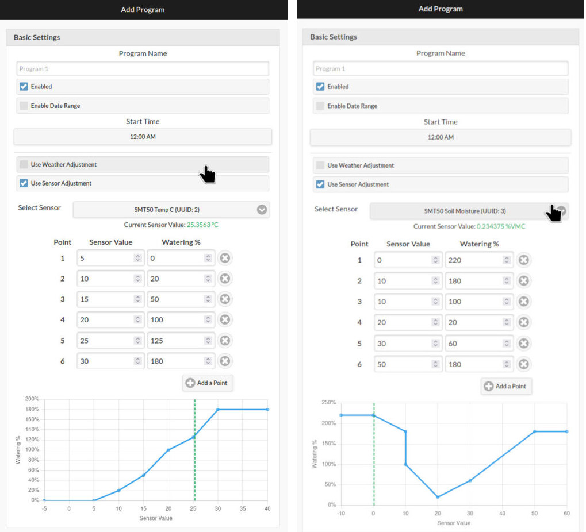

Sensor Expander User Manual
Introduction

The Sensor Expander provides 16 channels of analog sensor inputs to OpenSprinkler. It allows OpenSprinkler to interface with a wide variety of external sensors, such as temperature, soil moisture, light, pressure, and water-level sensors. The firmware can read, display, and log their values, and use them to adjust watering times automatically based on real-world conditions. Examples include: reducing watering when soil moisture is high, adjusting for temperature, accounting for ambient light levels, or stopping irrigation when a water tank runs low.
Compatibility
- The Sensor Expander requires an OpenSprinkler v3 (v3.0-3.4) main controller, running Firmware 2.2.1(5) or newer. The App/UI version must be 2.4.96 or newer.
- Each main controller only supports one Sensor Expander.
- The Sensor Expander may be used together with Zone Expanders (up to four).
The Sensor Expander is NOT compatible with OpenSprinkler v2.3 or OpenSprinkler Pi (OSPi). However, recent versions of OSPi (v1.5 and v2.0) feature two on-board ADS1115 chips, providing 8 channels of analog inputs out of the box when updated to firmware 2.2.1(5).
Sensor Terminology:
- Built-in Sensors refer to sensor ports on the main controller, identified by
SN1–SN4where available. They support digital sensors such as rain, flow, and program switch. - Expanded Sensors are managed through Edit Sensors. They include analog sensors connected to the Sensor Expander and virtual sensors such as Aggregate and System Internal sensors. Expanded Sensors can be used for program adjustment.
Hardware & Wiring
Power Off Before Making Changes
Always power off the main controller before making expander changes (connecting, disconnecting, re-wiring). Never plug in/out a ribbon cable, or install/remove sensors while the main controller is alive.
Use the Correct Expander Port
On OpenSprinkler v3, use the port on the left marked Expander. Do NOT use the port on the right marked Ether; that port is only for the wired Ethernet module.
1. Insert Expander Cable
- With the main controller powered off, plug one end of the ribbon cable into the main controller's Expander port. On OpenSprinkler v3, this is the port on the left. The connector is keyed and has a raised bump, which must align with the notch in the receptacle. When correctly oriented as shown below, the red stripe on the ribbon cable is always on the right side of the receptacle. If the connector does not seat easily, stop and check its orientation; never force it.

- Plug the other end of the cable into the Sensor Expander. Again, the connector is keyed, and its bump must match the notch at the top of the receptacle. The two 2×5 ports on the Sensor Expander are equivalent. Use either one, and use the other to connect Zone Expanders, if present.
2. Wiring an Analog Sensor
Most analog sensors provide the following three connections. Check the sensor's datasheet to verify its wire colors and voltage requirements.
- Power: Connect to the Sensor Expander's
3.3Vor5Vpin, according to the sensor's supply-voltage requirement. - Ground: Connect to the Sensor Expander's
GNDpin. - Signal: Connect the sensor's output to one of the 16 inputs, labeled
A1–16.
⚠️ Important Notes: Supply and Signal Voltage Limits
- The expander provides dual voltages:
3.3Vand5V. The5Vrail is denotedVDDbelow. - Due to legacy design, on an AC-powered OpenSprinkler v3, the expander's
5V(VDD) pin supplies only4.3V(one diode drop below5V). You should normally use this pin if4.3Vis sufficient to power your sensor. If your sensor requires a true5Vsupply, you may use the main controller's+5Vpin. However, the expander'sVDDremains at a lower voltage, so your sensor's output must never exceedVDD + 0.3Vto avoid any potential damage. For example, withVDD = 4.3V, your sensor's output must remain below4.6V, regardless of its supply voltage. Exceeding this limit risks damaging the expander's ADC chips. - These limits are compatible with many common irrigation sensors. For example, SMT50, VH400, and THERM200 all accept a supply voltage of
4.3Vand produce an output between0–3V. They can therefore operate from the expander's VDD while remaining well below the ADC input limit. - Before connecting a sensor, carefully check its datasheet for both its required supply voltage and its maximum output voltage, to make sure they are within limits.
(The expander's 1WD pins are reserved for 1-wire devices and are not enabled in this firmware.)
3. Detection and Troubleshooting
After wiring is complete, power on the controller and open Edit Sensors. When adding an ADS1115 sensor (the default sensor type), the interface shows a warning if the required analog hardware is not detected. If detection fails:
- Power off the controller.
- Check the ribbon-cable orientation and seating.
- Check all connections in the expansion chain.
- Power on the controller and check again.
For additional diagnostic guidance, see Troubleshooting.
Edit Sensors & Sensor Logs
The instructions below describe Firmware 2.2.1(5) and App/UI 2.4.96. The firmware supplies sensor metadata to the UI, so later releases may display additional types, fields, or units.
Add or Edit a Sensor

Open Edit Sensors, then add a new sensor or modify an existing sensor. Every sensor has the following common settings:
| Setting | Description |
|---|---|
Name |
User-defined sensor name (up to 32 characters). |
Enabled |
Sensor enable flag. |
Logging |
Enable logging of this sensor. |
Show on Home |
Display the latest reading on the homepage. |
Type |
ADS1115, Aggregate, System Internal, or Onboard Digital. |
Interval |
Time between sensor readings and logging, in minutes. See note below. |
Unit |
Physical unit for this sensor. |
Min/Max |
Output limits. Values outside this range are clamped and marked in the sensor status. |
Each new sensor is assigned a stable ID (uuid). Unlike a positional index, a uuid does not change when sensors are deleted, modified, or reordered, so logs, program adjustments, and Aggregate Sensors can continue to identify the sensor by its uuid.
Choosing an Interval
Interval controls how often the sensor is read and logged (if enabled). A shorter value leads to more frequent logging, which can slow down log retrieval and chart display, and reduce the relative log capacity for other sensors. Most irrigation-related measurements change slowly, so we recommend an Interval of 15 minutes or longer. Use a smaller value only if your application truly needs it.
Configure an ADS1115 Sensor
To configure an ADS1115 sensor: first type in the Pin number (1–16) to which the sensor is wired, then choose a Subtype:
- Linear: Converts raw ADC voltage linearly by
value = scale × voltage + offset. Thescaleis applied first, followed by theoffset. - Baked-in Types: Pre-configured for known sensors (SMT50, SMT100, VH400, THERM200, AquaPlumb). The firmware internally applies the formula obtained from these sensors' datasheets to convert raw ADC voltage to sensor readings. Users can additionally apply post-conversion
scaleandoffsetto calibrate the readings. - Piecewise Linear: The most flexible type, supporting non-linear mapping of voltage by 2-8 sample points, each a
(voltage, value)pair. Values between points are interpolated.
The Sensor Expander is only detected during controller startup. If the expander is not plugged in, or plugged in after the controller is powered on, a warning The required hardware for this type was not detected will be shown in the UI.
Configure Other Sensor Types
The Edit Sensor interface also allows non-ADS1115 sensors, including:
- Aggregate: Combines up to eight child sensors and aggregates their data using operations like
Min,Max,Average,Sum,Median, orRange. Each child may have its ownscaleandoffset. This is useful, for example, when you need to average or denoise readings from multiple soil moisture sensors. Aggregate sensors can themselves be children of other aggregate sensors, allowing flexible hierarchies. - System Internal: Monitor metrics like available Heap size and Flash size. Combined with logging, this lets you track the microcontroller’s resource usage over time.
- Onboard Digital: Allows you to programmatically link the controller’s built-in digital sensors (e.g., rain, soil) to the Expanded Sensor interface. Normally, built-in sensors affect watering on a per-zone basis (via each zone’s Ignore Sensor flag). By routing them through the Expanded Sensor interface, you can use them in program-level adjustments.
(The Weather Sensor type is currently disabled in firmware 2.2.1(5).)
Display Sensor Readings

A sensor's most recent reading is displayed on the homepage if its Show on Home flag is set. Below is a list of Sensor Value Indicators:
| Indicator | Meaning |
|---|---|
| Green value | The displayed value is valid and current. |
| Orange with ⚠ | The most recent read failed because of a hardware or communication error, or the value is stale because its update window passed without a successful reading. |
| Blue with ⊤ | The value exceeded max and was clamped. |
| Blue with ⊥ | The value fell below min and was clamped. |
| Gray — | No valid reading yet, such as before the first successful reading. |
View/Download/Delete Sensor Logs

The Sensor Logs page displays retained sensor readings. Here you can:
- View sensor readings over a selected period (
3H,1D,1W,All). - Drag-select a region to zoom in, or pinch to zoom on a mobile device, then Reset Zoom.
- Download an individual sensor's data as a
.csvspreadsheet. - Download All sensor logs.
- Delete All logs, or delete an individual sensor's records.
- A Show Inactive checkbox lets you view logs from previously deleted sensors.
Sensor Adjustments
The Edit Programs page now includes a new Use Sensor Adjustment section. It lets you define how the program's station run times should be scaled based on the value of a selected sensor. For example, reducing watering when soil moisture is high, increasing it when temperature is warm, or stopping watering at a defined sensor value. You can use any sensor as input, including an Aggregate Sensor that combines readings from multiple sources.

Configure a Sensor Adjustment
Go to Edit Programs, add a new program or select an existing program, then enable Use Sensor Adjustment. Select a sensor from the dropdown list, then define a custom Adjustment Curve by providing up to eight sample points, each a {sensor_value, watering %} pair. Values between points are linearly interpolated, and values outside the range use the nearest endpoint factor. Duplicate values are allowed and define a step. The curve is visualized in real time as you add or modify sample points. When available, the current sensor value is shown as a green dotted line for reference.
If the selected sensor is disabled or deleted, or its reading is unavailable, failed, or stale, the sensor adjustment factor defaults to 100%.
Combined Adjustment
Sensor Adjustment and Weather Adjustment can work alongside each other. The program’s final water time is multiplied by both the sensor-based and the weather-based "watering %" values. When both are enabled for a program:
total_adjustment_factor = weather adjustment × sensor adjustment
The Program Preview feature calculates the total adjustment when displaying the resulting water time of each station in a program. For example:
Weather adjustment: 80%
Sensor adjustment: 150%
Total adjustment: 80% × 150% = 120%
A station with a programmed duration of 30 minutes would therefore run for30 × 120% = 36 minutes.
Specifications
| Sensor Expander | |
|---|---|
| Num. of ADC Channels: | 16 |
| Dimensions: | 63.5 × 63.5 × 25.4 mm (2.5 × 2.5 × 1.0 in) |
| Weight: | 113 g (4 oz) |